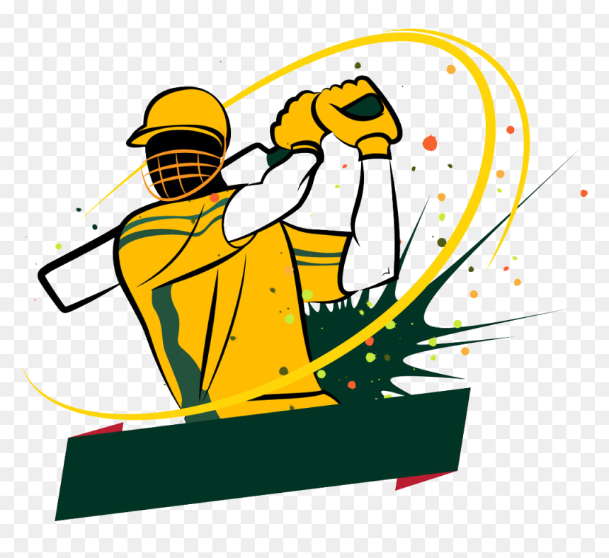
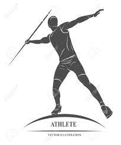

Learn About Sports
Never say never because limits, like fears, are often just illusions.
-Michael Jordan
List of Sports

Basketball
basketball
Basketball, game played between two teams of five players each on a rectangular court, usually indoors. Each team tries to score by tossing the ball through the opponent’s goal, an elevated horizontal hoop and net called a basket.
ABOUT BASKETBALL

Cricket

Snowboarding

Javelin throw